《波段市场研究报告》仅供具备独立决策能力的专业投资者进行学术与市场交流。文中所有推演与数据绝不构成任何买卖建议或“交易信号”。受监管限制，我们不提供具体操作推荐。初级投资者切勿在此寻找短期交易捷径，所有投资必须基于独立判断，风险自担。
以下是3月11日标普500 30分钟图
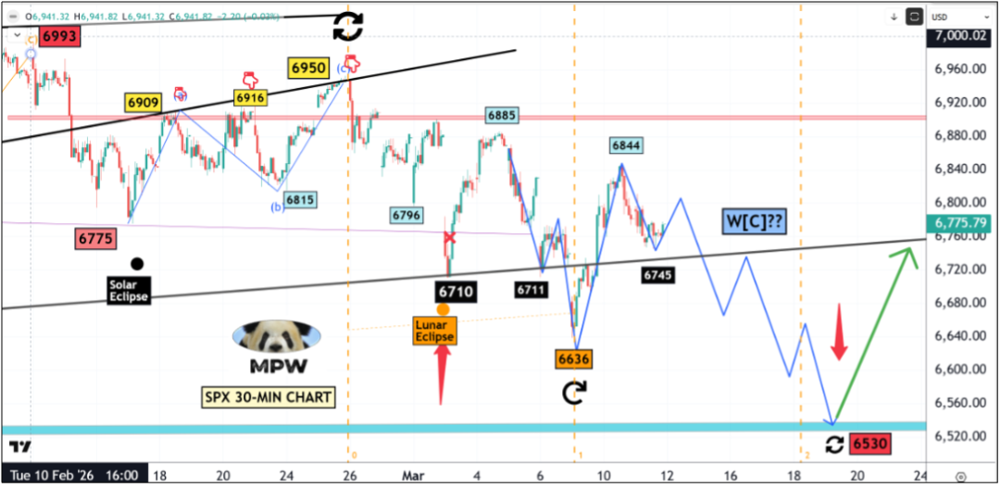
以下是更新后标普500 30分钟图
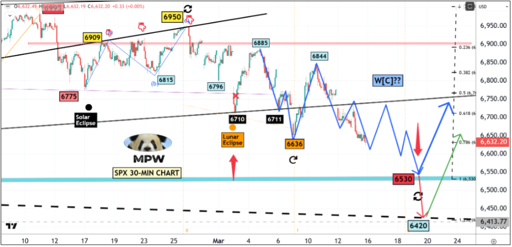
走向水星逆行反转的慢动作崩盘
（1）正如预期并在上方蓝色路线图中所标记的那样，标普500指数跌破了黑色支撑线，并触及了6621的更低低点。
（2）尽管市场极其动荡且难以驾驭，但总体方向依然向下——目标区域与我几周前在图表上标记的相同，在6530附近；时间表也保持不变，即在3月20日附近，届时当前的水星逆行将结束。
（3）我增加了一个更低的底部目标位6420，因为这可能标志着触及虚线趋势线的闪崩低点。
发生了什么？
在3月11日发布的周中更新中，我写道：
既然水星逆行的起点和中点分别标志着当前回调的起点和反转点，我强烈预感水逆的结束日期（3月20日）将标志着W-E浪下跌的完成，目标在6500区域附近。
$MMTW（市场宽度指标）还不够低：通常情况下，对于一个主要底部，该指标会跌破25，尤其是如果这一波段是扩张三角形中最后且更长的W-E浪——请参见下方图表中的波浪计数标签。我敢打赌，在底部时，$MMTW会降至15。
此处附加编者注：所有的市场分析师都会做出预测，并且所有分析师都有对有错的时候，但我很少看到有分析师像我一样，无论对错，都会每周更新并回顾之前的“预测”。
是的，我选择了最近过去中更多支持性的陈述来引导我的更新——事实上，我做出了很多正确的预测，但我也希望大家理解，我对自己的言论和文章负责，并且我从错误中学到的东西远多于从正确预测中学到的——这就是这场交易游戏的魅力与本质，只要市场还在交易，我们都是学习者。
在过去两个交易日里，我在日内交易方面没做太多操作——因为我在周五刚刚结束了为期一个月的亚洲之旅。
我可能会写一篇年终旅行日志，向大家展示我在2026年去过多少地方——今年到目前为止，我曾在洛杉矶、旧金山、纽约、圣奥古斯丁（佛罗里达州）、圣何塞（加利福尼亚州）、香港、北京、广州、厦门、上海、深圳等地完成这份通讯的撰写并发布。想象一下时差、旅行日程以及网络连接问题——但是，我信守承诺，为大家提供了最新且思路清晰的市场解读。
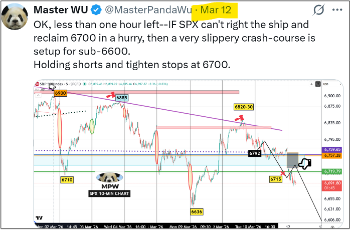
最近我开始增加多头（BULL）一侧的交易，但总体上仍保持约70/30的比例（空头/多头）。
这一策略基于以下几个总体判断：
底部尚未到来，但下跌已接近尾声。
上涨和下跌都伴随着剧烈的波动，为多空双方创造了均等的机会。
“日内交易中的灵活转换”有助于保持客观的心态。
接下来是什么？
中级W【5】浪已演变成一个五浪序列，类似于中级W【1】浪，在此过程中几乎没有或只有很少的大规模调整浪。然而，为了确立最终的顶部，市场必须在日线、周线甚至月线级别的相对强弱指数（RSI）上建立稳固的背离结构。经历急剧的下跌波段后，月线和周线RSI已完成重置。
标普500指数正逼近我几周前规划的底部区域，从周期来看，3月20日可能成为自7003点以来整个回调过程的一个重大且最终的反转点。
请关注【1】位于6604点的SMA200（200日均线）橙色线；【2】追溯至1930年的棕色超长期（VLT）趋势线。
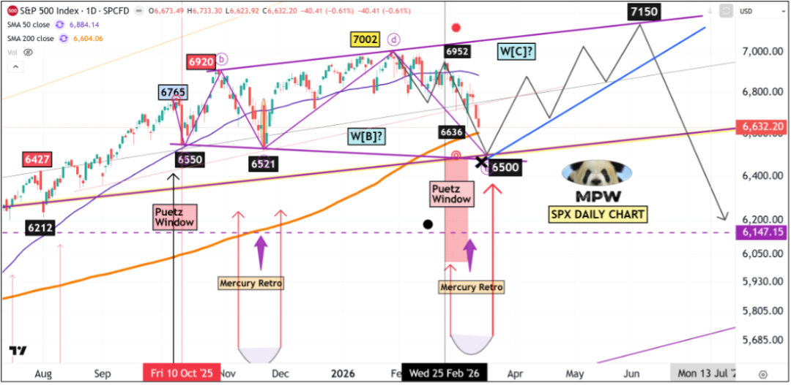
$MMTW：我在上一期研究报告指出，$MMTW必须跌破25的水平，最好是降至15-20区间，才能形成一个可持续的底部。考虑到中东冲突升级的性质以及石油冲击，这种情况极有可能在下周发生。
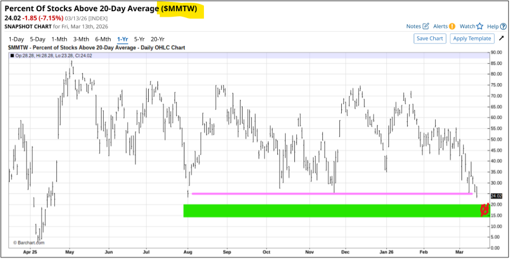
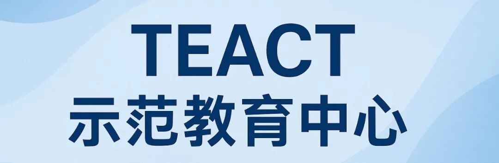
理性与物理学
约翰·梅纳德·凯恩斯（John Maynard Keynes）曾说过：“市场保持非理性的时间，可能比你保持不破产的时间更长。”这句话的真理在于市场的整体结构，它建立在无限的因素和众多决策者的基础之上，而其中绝大多数人远非理性。然而，从长远来看，物理定律和万有引力会将这些非理性拉回现实；唯一的问题是，你是否能撑过去，活着看到那一天的到来。
我在上一期示范教育中心的开篇陈述如下：下周一和周二将是迷你崩盘的实际窗口期，届时将释放恐慌情绪，并迫使大多数多头投降。
我这么说，并不是因为我倾向于看空并持有空头头寸，而是因为在这个关键时刻有太多相关因素交织在一起。
值得一提的是，我列出了8个因素来证实我上述的预测。
事实证明，3月9日（周一）那根大级别的“先跌后涨”日K线为接下来四天的交易铺平了道路并界定了区间【回顾请看下方的5分钟图表：周一的低点是6636，高点是6810，跨度高达180点。在接下来的几个交易日中，市场基本上以慢动作重走了一遍这段旅程】。
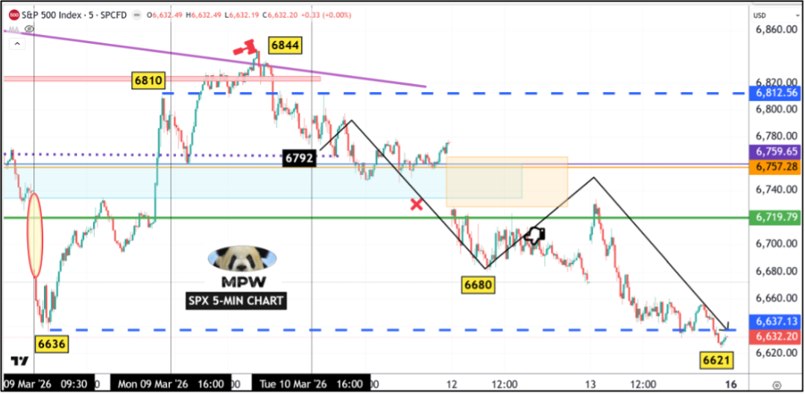
伴随着不断出现的字面和隐喻意义上的“突发”与“爆炸性”新闻，市场像猴子一样上蹿下跳——这就是我所说的“猴市”，在这种市场环境和时期，只有“灵活转换者”才能获胜并生存下来。
不要争辩和寻找合理化解释，
只需反应，而且要快速反应。
至于聚焦RSI指标的标普500指数月线图，这是上周的状态：
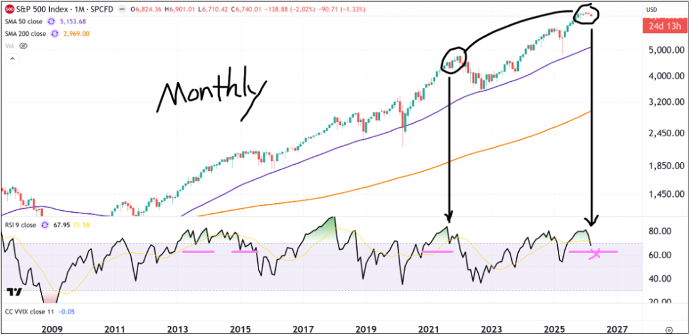
经历动荡的一周后，这是当前的形态结构：
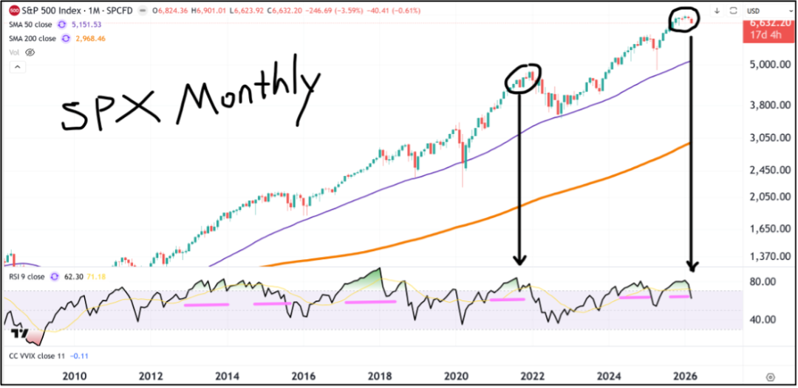
现在，我们可以看到RSI大幅下降——从上周的读数68降至本周五的62.30。
在这个水平上，或者稍微高一点【我预计经过月末的反弹，标普500指数在3月底的收盘价将在6650-6700之间】，4月和5月向历史新高（ATH）的反弹，将为随后极具划时代意义的熊市结构创造一个足够大的RSI月线级别背离。
这种类比同样适用于周线甚至日线级别——顺便说一句，日线和周线的RSI背离各项条件均已具备，唯一缺少的是另一个历史新高（ATH）。
此时此刻似乎不合逻辑且不理智，但非理性的广大交易者会将我们推向那里。
当前市场结构的另一个有趣且令人大开眼界的特征，是我称之为标普500指数的“超级穹顶结构（Super-Dome structure）”——来看看这个：第一张图是我上周发布的，第二张图是更新后的。
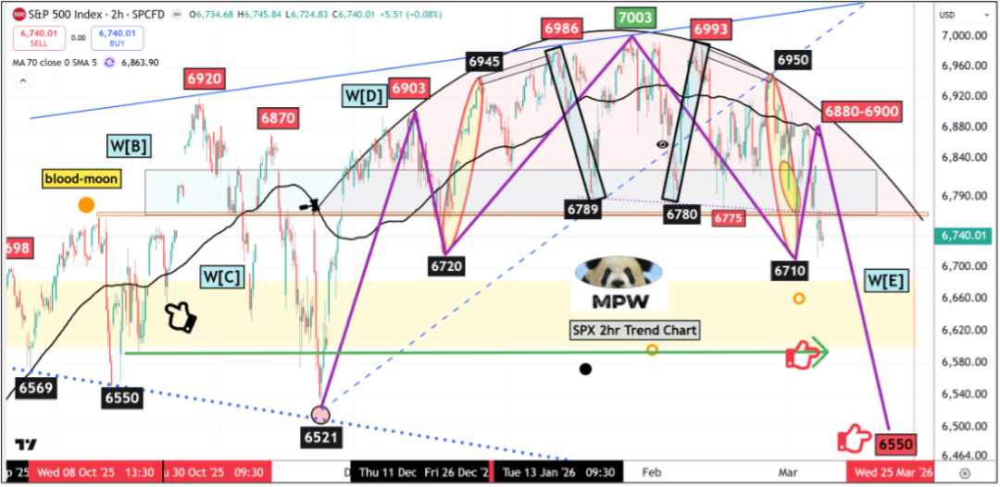
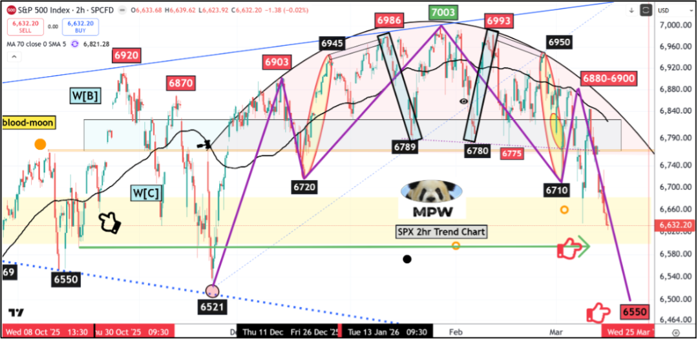
鉴于紫色路线图出奇地准确——尤其是下跌的最后一段，你一定以为我为了让它看起来更惊艳而偷偷篡改了图表。
不。一切都是原版的。
这种形态和结构本身就是极好的证明：市场之神不仅是一位伟大的数学家，也是一位伟大的建筑师。
现在，这是一个严肃的问题：市场会在6600点的SMA200附近触底，还是会跌至6500点下方更低的水平，以触及日线图上的超长期支撑趋势线？
请看我在下方2小时图表上标记的三个关键位：
（1）绿色的6600点位，这与SMA200均线重合；
（2）红色的6550区域，这是从前期低点和支撑位延伸的斐波那契（FIB）扩展位；
（3）黄色的6425点位，这是典型的扩张三角形W[E]浪的区域——请参阅蓝色虚线。
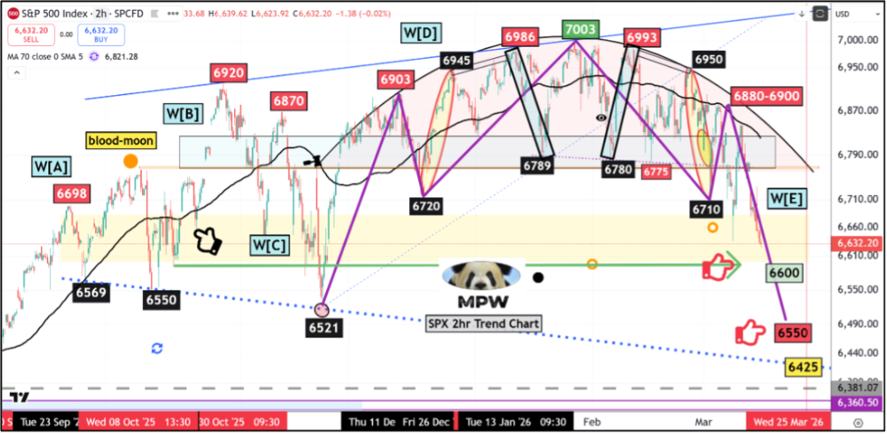
谜题在此：如果我的大三角形W-【4】浪判断是正确的，那么W【E】浪的底部“必须低于”W【C】浪的底部，即6521点。
然而，所有主要指标都已显示出巨大的背离和超卖信号，包括VIX恐慌指数、NYMO麦克莱伦摆动指标等，这通常预示着一波强劲且即将来临的反弹和反转。
从7003点开始的下跌走势是一团巨大的乱麻——全部纠缠在一起，绞杀了那些正统的艾略特波浪理论（EWT）追随者。
在我看来，这必定是一个复杂的调整浪，作为更复杂的横盘结构的最后一部分，极有可能是自去年（2025年4月）关税低点以来看涨W-5浪中的最后一个W-4浪。
如果你逼我做出选择，我会说6550看起来最具吸引力，有50%的概率；6600位居其次，概率为30%，最后是6425，概率为20%。
无论如何，下周我会更加敏捷，在看跌期权（puts）和看涨期权（calls）之间灵活转换。
祝一切顺利。